Nos esperaban nueve vinos y ninguna silla
Llegamos a la hora de siempre, y lo primero que entendimos al subir es que aquella noche no íbamos a sentarnos enseguida.
La sala estaba montada con mesas redondas —no la mesa larga de otras visitas—, vestidas de gris perla, con centros de flor seca, vasos de cristal verde y la minuta de cada comensal esperando sobre el plato. Al fondo, una pantalla azul con dos palabras: EL PÒSIT. Y a un lado, nuestro propio roll-up, ese que viaja con nosotros a todas partes.
Nos recibió Pedro. Y lo primero que hizo fue llevarnos a dos mesas que no eran para cenar.
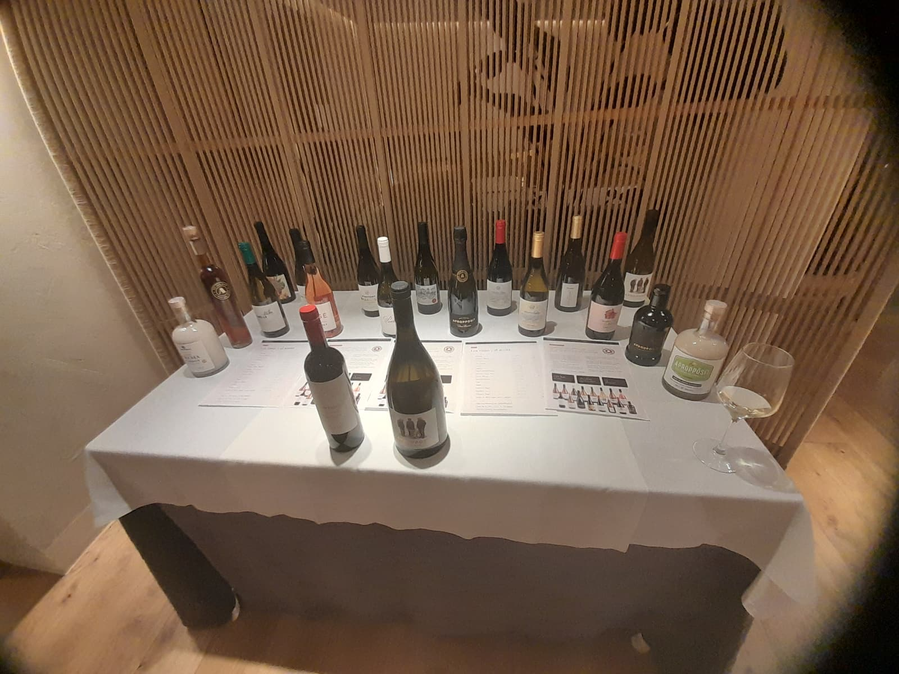
La casa se presenta antes del primer plato
Sobre un mantel blanco, nueve vinos del Celler Apropòsit alineados y abiertos, cada uno con su ficha de explicación al lado. Blancos, rosados, tintos, un brut nature. Y al final de la fila, dos botellas que no eran vino: la ratafía y el licor de la casa. En la mesa contigua, el resto de los productos de Apropòsit. Repartidos por la sala, los aperitivos.
Así arrancó la noche: de pie, copa en mano, leyendo etiquetas y cambiando impresiones con quien tocara al lado. Sin protocolo, sin sitio asignado, sin prisa.
Hay un detalle en todo esto que conviene no pasar por alto. Apropòsit es un juego de palabras que significa «cerca del Pòsit», y es la marca de la propia casa. Es decir: antes de servirnos un solo plato, el restaurante ya se había presentado entero, y lo había hecho con lo suyo.
Los aperitivos fueron tres y los tres iban en serio: carpaccio de picaña madurada sobre pan crujiente, croqueta melosa coronada con un velo de ibérico Joselito, y langostino en crujiente dorado con una salsa suave de zanahoria, coco y lima.
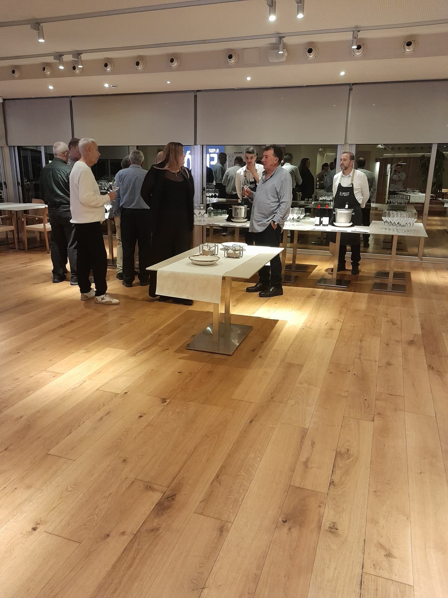
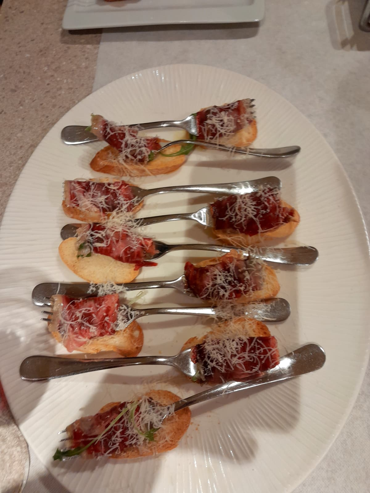
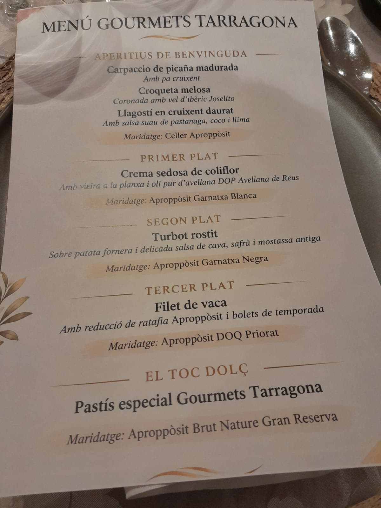
«Hoy podéis estar en mi casa»
Ya sentados, tomó la palabra Yarritu: unas notas para los socios, el repaso de los próximos compromisos —que a estas alturas del año son los que de verdad importan— y la presentación del restaurante.
Y entonces habló Àngel Pérez, y la cena se detuvo un rato. Empezó recordando que ya había compartido mesa con nosotros: «como dice Yarritu, estuve en El Terrat. Cenamos muy bien, estuvimos muy a gusto». Y siguió con una frase que explica bastante bien cómo se vivió la noche: «hoy, la satisfacción de que podéis estar en mi casa, y espero que también aquí, a nuestra manera, lo disfrutéis».
Contó los inicios: de dónde sale el grupo El Pòsit y cómo se ha ido haciendo a lo largo de medio siglo, desde la cocina marinera de Cambrils hasta hoy. Y definió lo suyo sin adornos: «nuestra cocina es una cocina sencilla». Dicho por alguien que acaba de poner nueve vinos propios sobre una mesa, esa modestia tiene su gracia.
Tuvo además la elegancia de hablar de nosotros, poniendo en alto los valores que, dijo, caracterizan a esta asociación. Fue una charla amena, de las que no se hacen largas.
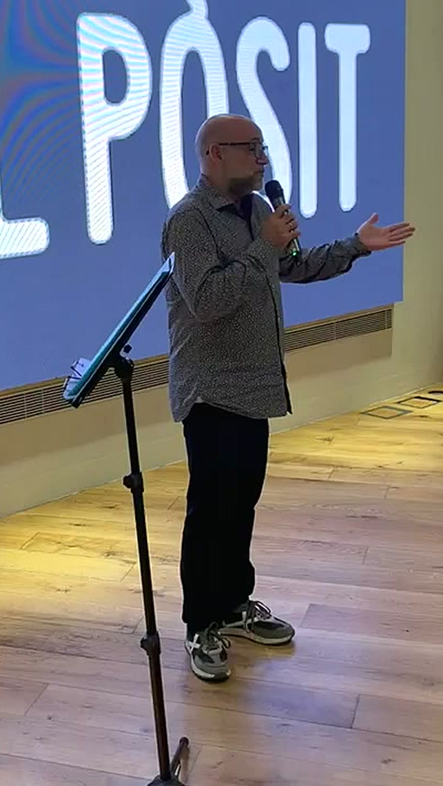
«En el turismo hay cosas que cambian; una, no»
El ponente invitado de la noche fue Agustín Falcón García, nacido en Las Palmas de Gran Canaria, responsable de calidad y director técnico de Best Hotels.
Arrancó con una confesión que le ganó la sala de entrada: «en el turismo hay cosas que cambian, pero hay una que no cambia: lo poco que me gusta hablar por el micro». Y, un segundo después, mirando al aparato: «uy, ¿ves? Y ahora, los nervios».
Después habló del turismo de la Costa Daurada sin venderlo. Puso sobre la mesa los objetivos y los planes de futuro, sí, pero también los avances ya conseguidos, los inconvenientes que siguen ahí y las mejoras que habrá que afrontar si se quiere llegar a alguna parte. Para una asociación que lleva todo el año hablando de producto y de territorio, escuchar al sector que trae a la gente hasta aquí resultó un cierre más coherente de lo que parece.
Como con todos nuestros invitados, se le entregó el trofeo con la imagen de Gastronia.
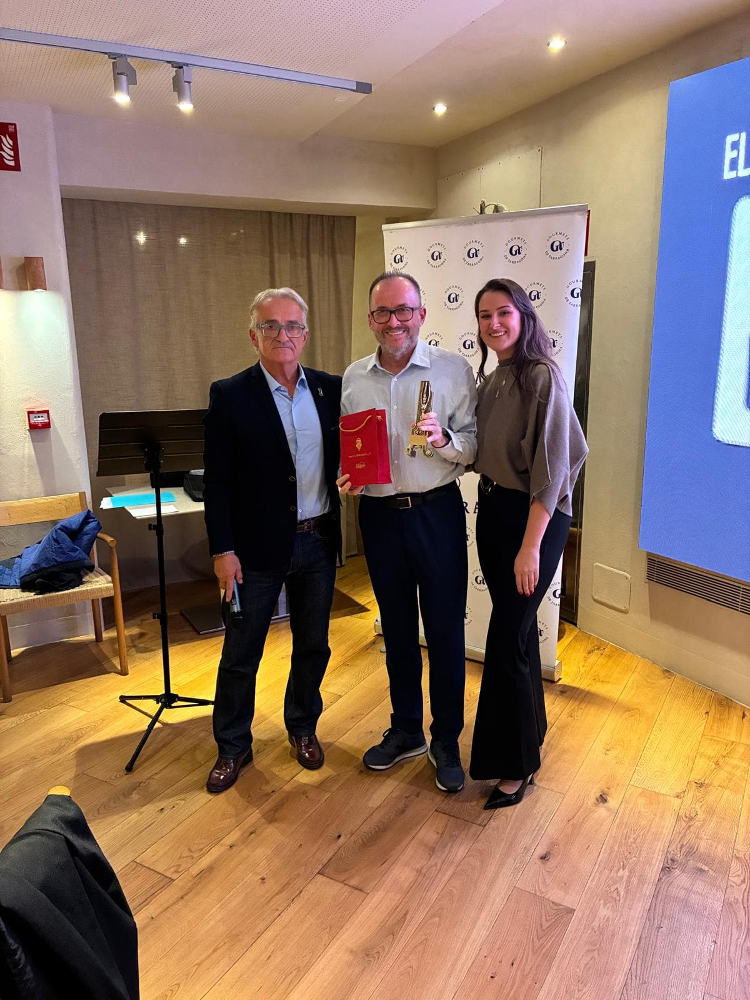
La crema que llegó después de la vieira
Lo primero que llegó a la mesa no fue un plato entero: fue la mitad. En el fondo del bol negro esperaban la vieira a la plancha, el brócoli, la coliflor blanca y la morada y unas avellanas enteras. La crema sedosa de coliflor se vertió delante de nosotros, ya en mesa, cuando habíamos tenido tiempo de mirar lo que había debajo.
El aceite era de avellana de la DOP Avellana de Reus. En esta provincia, eso es casi una declaración de principios: la casa es marinera, pero el campo que tiene detrás también cuenta.
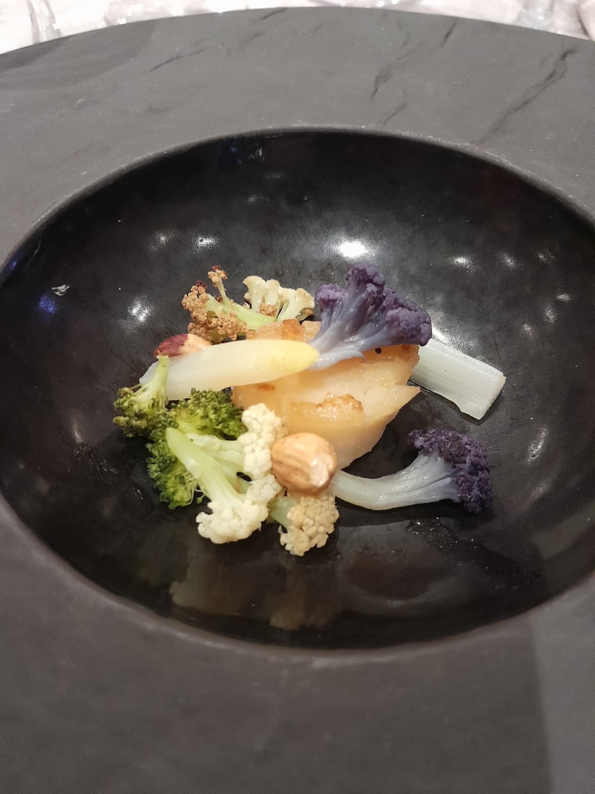
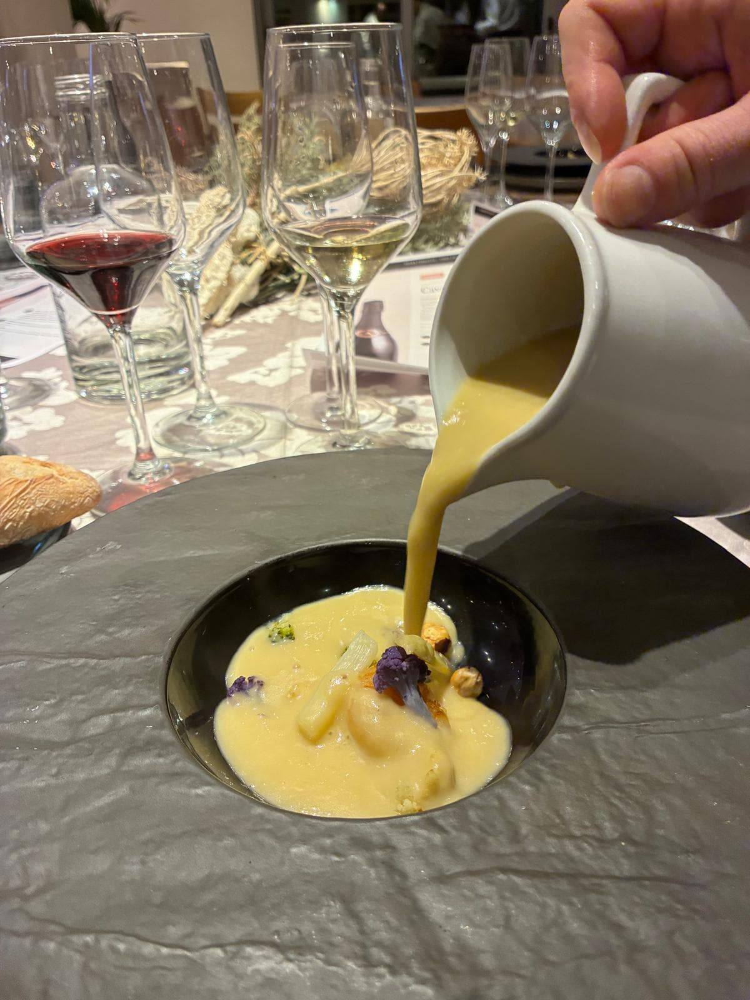
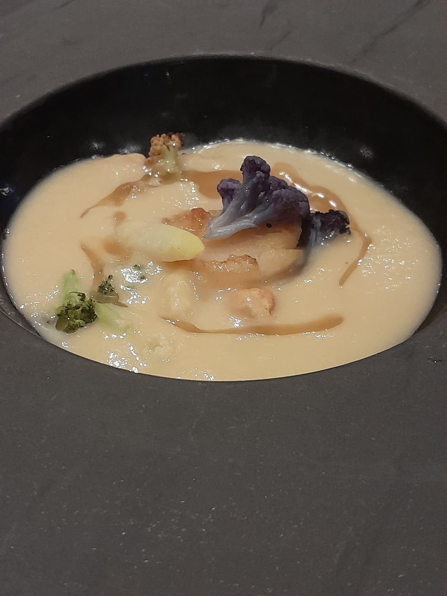
El rodaballo, que probablemente ganó la noche
Rodaballo asado sobre patata panadera, con una salsa delicada de cava, azafrán y mostaza antigua. Punto exacto, lámina que se abría sola y una salsa que acompañaba sin tapar, que con el azafrán de por medio es más difícil de lo que parece. Si hubiera que quedarse con un plato por puro sabor, y no es fácil, probablemente sería este.
Detrás llegó el filete de vaca con setas de temporada —noviembre manda— y una reducción de ratafía Apropòsit. La misma ratafía que habíamos visto en la mesa de la entrada, ahora convertida en salsa. La casa firmando otra vez con lo suyo, sin necesidad de decirlo.
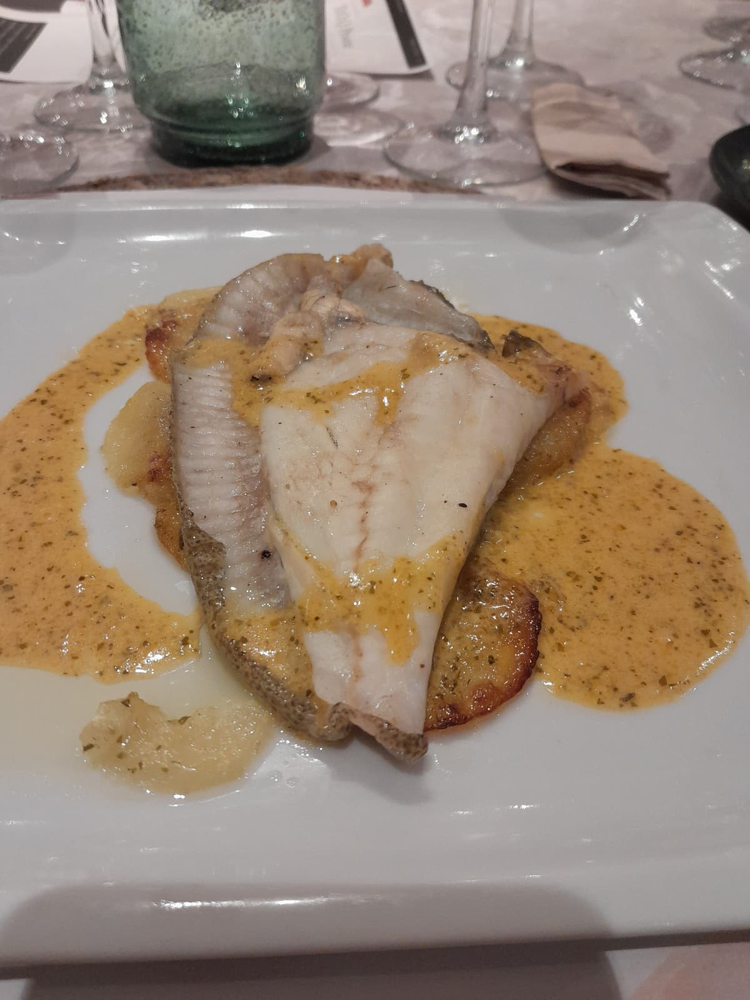
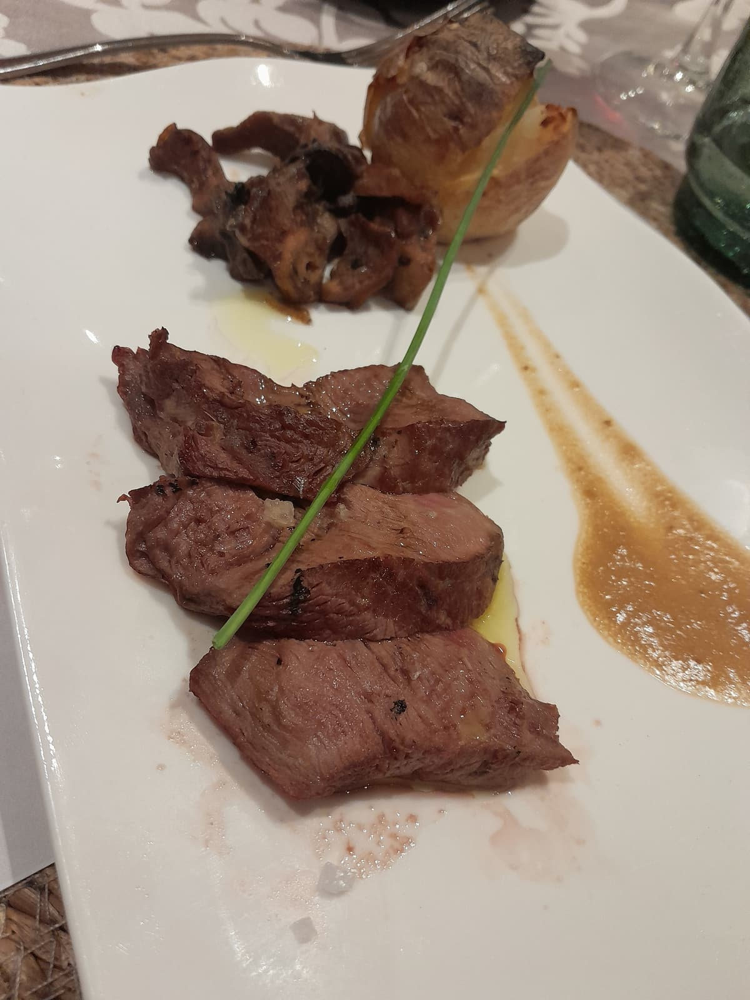
Un postre que era un árbol genealógico
La minuta decía «Pastís especial Gourmets Tarragona» y no decía nada más. Ni ingredientes, ni descripción, ni pista. Treinta personas llevaban toda la cena preguntándose qué sería aquello.
Llegó en vaso, con el merengue tostado por encima y las capas asomando por el cristal. Y entonces salieron de la cocina Fran y Merce, micrófono en mano, a contarlo.
Aquel postre no era un postre. Era, dijeron, «un homenaje a toda la trayectoria y a todos los gustos personales de la familia del Pòsit». Y lo fueron desmontando capa por capa, que es cuando la sala entendió lo que tenía delante.
Empezaron por el principio: una de las fundadoras era una apasionada de la almendra. De ahí el crujiente de almendra natural de una de las capas y, debajo del todo, el frangipane, que también es almendra. Subiendo, la segunda generación, muy de vainilla: un cremoso de vainilla. Y después una gianduja, esta vez de chocolate blanco. Arriba, para cerrar, algo refrescante.
Es decir: cada capa de aquel vaso era el gusto preferido de alguien de la casa, por orden de llegada al mundo. Medio siglo de familia, de abajo arriba, en una cucharada.
No hace falta explicar por qué fue un momento emotivo, ni por qué aquel postre se comió en un silencio distinto del de los otros platos.
Por sabor, el rodaballo. Por lo que ocurrió en la sala, el postre. Y esa es, probablemente, la mejor manera de acabar una temporada.
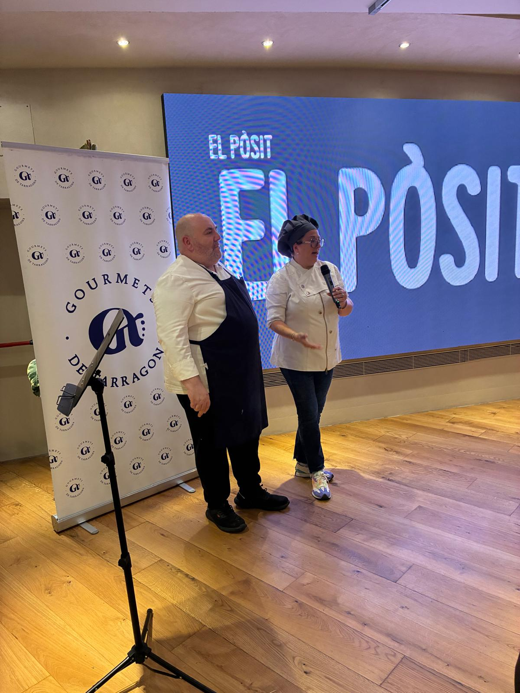
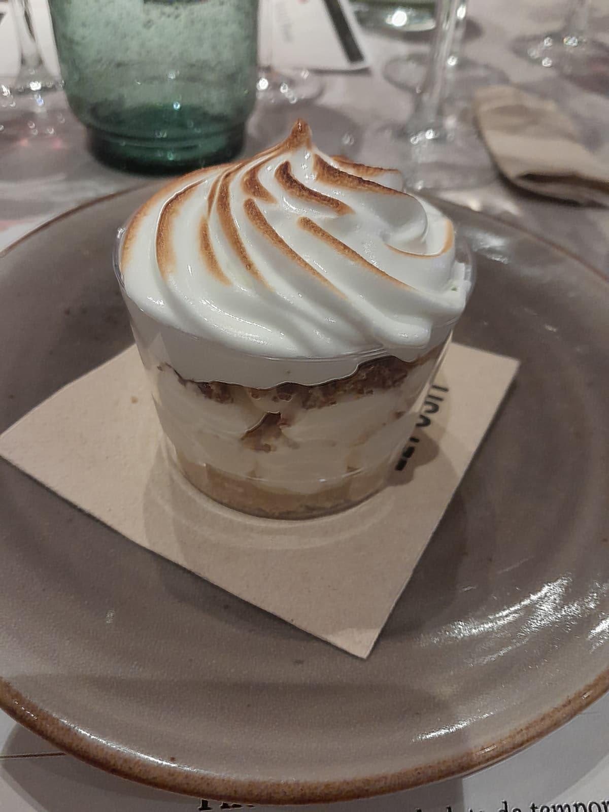
Blanco y tinto a la vez, y elige tú
El maridaje fue, como ya se intuía desde la entrada, íntegramente de Apropòsit: garnacha blanca con el primer plato, garnacha negra con el rodaballo, DOQ Priorat con la carne y un brut nature gran reserva para el postre.
Pero hubo una decisión de servicio que merece contarse, porque no la habíamos visto así en ninguna de las ocho visitas. En lugar de imponer el maridaje plato a plato, la casa sirvió el blanco y el tinto al unísono y dejó que cada comensal eligiera. Suena a detalle menor y no lo es: convierte el maridaje en una conversación en vez de en una instrucción. Buena experiencia.
Pedro fue explicando, uno a uno, los vinos y los platos —también buena parte del postre, antes de que salieran de cocina—. Claro, correcto y sin excederse, que es exactamente lo que hay que hacer cuando delante hay treinta personas con ganas de hablar entre ellas.
La salaNo miramos el reloj ni una vez
La mesa redonda tiene una virtud que la mesa larga no tiene: todo el mundo se ve la cara. Se conversa en grupo y no por parejas, y nadie queda desterrado en una punta. Las mesas estaban bien adornadas, se estaba cómodo y, sencillamente, se estaba bien.
El servicio, dirigido por Pedro, fue acertado y de buen ritmo de principio a fin. Y la prueba es siempre la misma, la que no se puede fingir: no nos dimos cuenta de la hora, y cuando quisimos mirar habíamos terminado a una hora perfectamente decente.
Al final llegaron los cafés, los licores y la ratafía, y todo lo que hiciera falta.
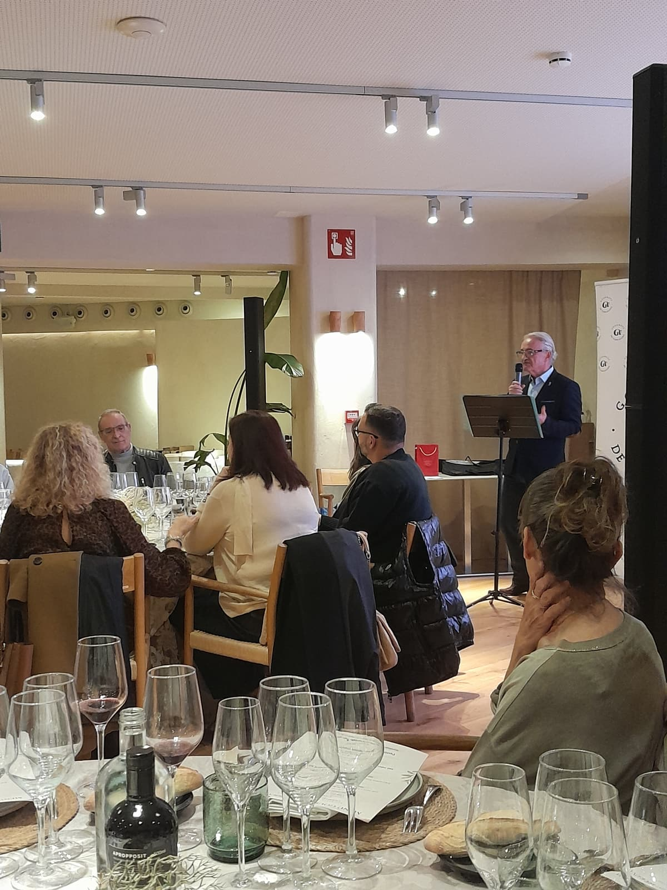
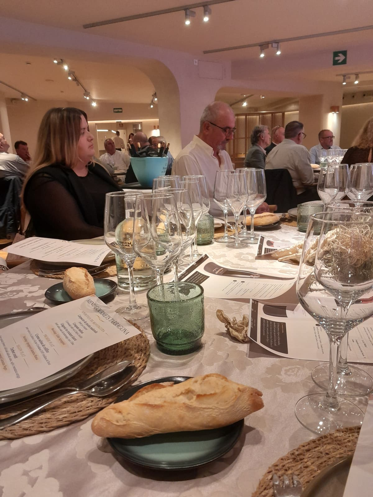
«Que lo pongas abajo, en la sala»
El diploma conmemorativo de los Gourmets de Tarragona se entregó al terminar. Y hubo un gesto que nos gustó: no lo entregamos nosotros. Lo entregó Agustín Falcón, el invitado de la noche, a Pedro.
La entrega fue de todo menos solemne. Entre bromas sobre cuántas botellas de ratafía acaban en según qué casas, alguien resumió el sentido de la placa mejor de lo que lo haría cualquier discurso: «lo que te queremos dar es nuestra presencia, que hemos estado aquí». Y, acto seguido, la petición práctica: «que lo pongas abajo, en la sala». Más claro, imposible.
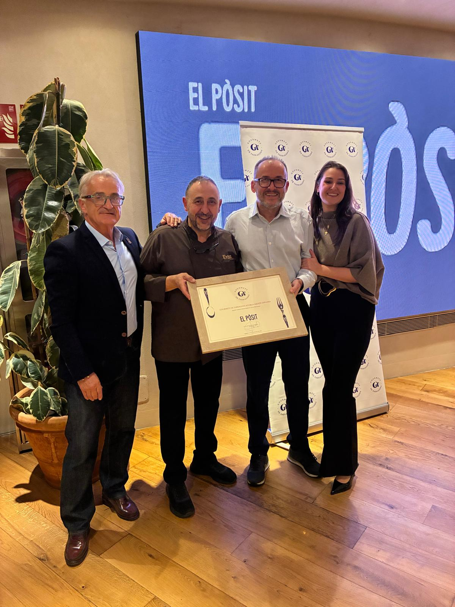
Después, la foto de grupo delante de la pantalla, con las dos palabras azules al fondo. Y a casa.
Nuestra miradaSe cierra el recorrido
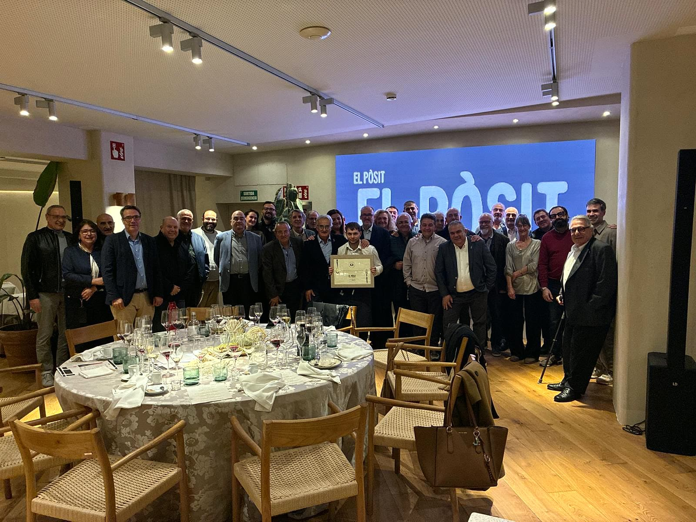
Con El Pòsit de la Pineda se acaban las ocho.
El comentario que más se repitió en la sobremesa fue que este año el listón está alto. Entre los asistentes ya se hacían quinielas, que es exactamente lo que pasa cuando acabas de votar y sabes que ya no puedes cambiar nada. Las puntuaciones están todas. El ganador está decidido. Pero eso se sabrá en la Gala, y no antes.
Lo que sí podemos decir hoy, sin esperar a ningún recuento, es lo otro: que el orgullo de esta noche no era haber cenado bien —que también—, sino haber completado el recorrido entero un año más. Y que toca dar las gracias, sin fórmulas, a los ocho restaurantes que nos han abierto la puerta y nos han dejado mirar.
Porque es lo único que pretendemos: divulgar la gastronomía del Camp desde una perspectiva sencilla y local, y que llegue lo más lejos posible. Disfrutarla nosotros, de paso. Y, por el camino, hacer sociedad, paisaje y territorio, y poner en valor a las personas —y a los personajes— que hay detrás de cada cocina.
Como aquel postre, que resultó ser una familia entera servida en un vaso.
Nos vemos en la Gala.